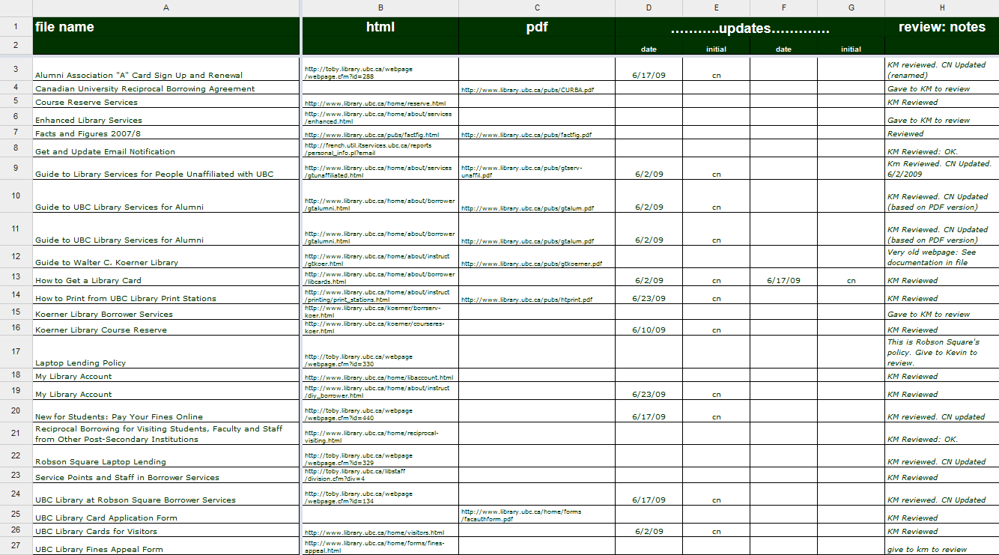

We’re All Disabled!
Part 2: Building Accessible (Web) Services with Universal Design
Cynthia Ng
@TheRealArty
October 1, 2014
http://bit.ly/arty-accessYYC
 Sjöblom, N. (2008). Grey seal on Märket. https://www.flickr.com/photos/taivasalla/2830915366 CC BY-NC-SA 2.0
Sjöblom, N. (2008). Grey seal on Märket. https://www.flickr.com/photos/taivasalla/2830915366 CC BY-NC-SA 2.0
 Anonymous. (2014). Content little screech owl :). http://imgur.com/gallery/NNTTvEU
Anonymous. (2014). Content little screech owl :). http://imgur.com/gallery/NNTTvEU
What is Accessibility?
Web accessibility means that people with disabilities can use the Web.W3C Web Accessibility Initiative. (2005). What is Web Accessibility. Introduction to Web Accessibility. http://www.w3.org/WAI/intro/accessibility.php- W3C Web Accessibility Initiative (WAI)
Why Should You Care?
Disability > Minority
Policy
Legislation
Getting Buy-in

[It is] well known among web developers that websites that are accessible are also much more usable for everyone.Eyadat, M., & Lew, J. (2011). Web Accessibility Factor a Key Focus for Serving Students. Review of Business Research, 11(2), 80.- Mohammad Eyadat and Jeff Lew
Benefits
- reflect institutional mission, leadership, and values
- serve all users
- make sound fiscal policy
- add value to the institution
Benefits Simplified
- findable
- accessible
- usable
- shareable
- efficient
- collaborative
Accessibility at Work
 Fettig, S. (2007). Rodin's Thinker. https://www.flickr.com/photos/stevenfettig/1390275600 CC BY-NC-SA 2.0
Fettig, S. (2007). Rodin's Thinker. https://www.flickr.com/photos/stevenfettig/1390275600 CC BY-NC-SA 2.0
Approach to Accessibility
Avoid the peanut butter approach.Horton, S. & Quesenbery, W. (2014). A Web for Everyone: Designing Accessible User Experiences. Rosenfeld Media.- Sarah Horton & Whitney Quesenbery
It just won't work to build a complete system and then, in the final stages of development, spread the interface over it like peanut butter.Lewis, C. & Rieman, J. (1994). Task-Centered User Interface Design: A Practical Introduction. http://hcibib.org/tcuid/- Clayton Lewis & John Rieman
 shrosa814. (2010). Tale of Squirrel and Peanut Butter. https://www.flickr.com/photos/shicksba272214/5159576009 With Permission from Owner.
shrosa814. (2010). Tale of Squirrel and Peanut Butter. https://www.flickr.com/photos/shicksba272214/5159576009 With Permission from Owner.
Accessibility often gets pigeon-holed as simply making sure there are no barriers to access for screen readers or other assistive technology, without regard to usability.Quesenbery, W. (2009). Usable Accessibility: Making Web Sites Work Well for People with Disabilities. UX Matters. http://www.uxmatters.com/mt/archives/2009/02/usable-accessibility-making-web-sites-work-well-for-people-with-disabilities.php- Whitney Quesenbery @whitneyq
Designing for Assistive Technology
Assistive Technology
- screen readers
- text-to-speech
- screen magnifiers
- joysticks
- mobile devices
- keyboards
 Anonymous. (2014). She loves the warm air coming out of the laptop. http://imgur.com/gallery/S3JnsF1
Anonymous. (2014). She loves the warm air coming out of the laptop. http://imgur.com/gallery/S3JnsF1
All Technology is Assistive Technology.Hendron, S. (2013). All Technology is Assistive Technology: 6 dispositions for designers on disability. https://medium.com/thoughtful-design/a8b9a581eb62- Sara Hendren @ablerism
Universal Design
Universal design is the design of products and environments to be usable by all people, to the greatest extent possible, without the need for adaptation or specialized design.Mace, R. (1998). Universal design in housing. Assistive Technology, 10(1), 21-28.- Ron Mace
Whereas [universal design] is a design methodology (similar to user-centered design), [accessibility] is its most commonly associated metric.Maler, A. (2013). The Complete Beginner’s Guide to Universal Design. UX Booth http://www.uxbooth.com/articles/the-complete-beginners-guide-to-universal-design/- Andrew Maler
 Minter, A. (2011). Hi There. https://www.flickr.com/photos/ehisforadam/6468933943 CC BY-NC-ND 2.0
Minter, A. (2011). Hi There. https://www.flickr.com/photos/ehisforadam/6468933943 CC BY-NC-ND 2.0
Building Universal (Web) Services
It is important for designers to formulate and adhere to usable design processes and guidelines throughout the entire cycle of development so that the product or service is accessible and universally usable for all.Stephanidis, C. (2009). Universal access and design for all in the evolving information society. In C. Stephanidis (ed.), The Universal Access Handbook (1–11). Boca Raton: CRC Press.- Constantine Stephanidis
 ProphetTenebrae. (2012). Red panda face palm. http://imgur.com/gallery/yS8YGZt
ProphetTenebrae. (2012). Red panda face palm. http://imgur.com/gallery/yS8YGZt
Ask Your Users
Challenges
- technological variety
- user diversity
- bridging the knowledge gap
Getting User Feedback
Personas
 University of Washington Libraries. (2008). UW Libraries Personas. http://staffweb.lib.washington.edu/news/units/ITS/ux/2009-q2/persona-construction/final-personas/uw-libraries-personas-overview-of-the-completed-project
University of Washington Libraries. (2008). UW Libraries Personas. http://staffweb.lib.washington.edu/news/units/ITS/ux/2009-q2/persona-construction/final-personas/uw-libraries-personas-overview-of-the-completed-project
Content Inventory
Card Sort

Task Analysis
 Reidsma, M. (2013). Slide 38. Websites are for People. http://matthew.reidsrow.com/articles/29 CC BY-NC-SA 3.0
Reidsma, M. (2013). Slide 38. Websites are for People. http://matthew.reidsrow.com/articles/29 CC BY-NC-SA 3.0
Developing Your Service

Approaches
Good Practices
- well structured code
- style guides e.g. Normalize CSS
- pattern libraries e.g. UI Pattern Library by GVSU
- polyfills and other helper libraries e.g. picturefill
- APIs e.g. SFU Library API
- testing frameworks or set of evaluation tools e.g. QuailJS
- good documentation e.g. Phabricator
Some “Special” Considerations
Keyboard Accessibility

Skip Links
<body>
<a class="hide-text" href="#main">Skip to Main Content</a>
<nav role="navigation">
// Menu
</nav>
<div id="main" role="main">
// Content
</div>
</body>
ARIA
Accessible Rich Internet Applications Suite
<nav role="navigation">
// Menu
</nav>
Media
- Images: alt=""
- Audio: transcript
- Video: transcript
- Video: captions
- Video: descriptive audio
Descriptive Video Example
Electrox3d. (2011). Star Wars for Blind People (Blu-ray audio track): description of a Jawa shooting R2!. http://www.youtube.com/watch?v=PCZqKxQME6o MrShuffleupagus. (2014). This is a picture I took of a friend's dog, Spike, and the face he makes whenever he's confused. http://imgur.com/gallery/9iGSCj7
MrShuffleupagus. (2014). This is a picture I took of a friend's dog, Spike, and the face he makes whenever he's confused. http://imgur.com/gallery/9iGSCj7
Top 10 Academic Library Websites
6 / 10 have carousel
5 / 6 autoplay
Singley, E. (2013). Top 10 Academic Library Websites. http://emilysingley.net/top-10-academic-library-websites-2013/Top 20 Public Library Websites
18 / 20 had carousel
17 / 18 autoplay
Anderson, M. (2013). 20 Great Public Library Websites. http://www.mattanderson.org/blog/2013/02/11/20-great-public-library-websites/Death to the Carousel
Inspired by shouldiuseacarousel.comEvaluating Your Service
Simulation
Evaluation
- HTML Codesniffer (bookmarklet)
- WCAG Contrast Checker (Firefox plugin)
- WAVE Toolbar
- HTML Codesniffer (bookmarklet)
- WCAG Contrast Checker (Firefox plugin)
- WAVE Toolbar
Guidelines for Your Content Creators
- Be clear and concise
- Use headers and tables properly
- Use descriptive links
- Describe images if needed
- Make and choose videos with captions, and add a link if you embed them
 Alexander, Dey. (2014). Text alternatives for images: a decision tree.
Alexander, Dey. (2014). Text alternatives for images: a decision tree.
Accessibility Statement
Take Aways
Until people find themselves in a situation where they are disabled due to their surroundings, they cannot fully appreciate how the built and virtual environments can throw obstacles in their paths – and indeed, profoundly affect their quality of life.City of Calgary. (2010). Universal Design Handbook. http://www.calgary.ca/CSPS/CNS/Pages/Publications-guides-and-directories/Universal-Design-Handbook.aspx- City of Calgary
One Thumb, One EyeballWroblewski, L. (2012). Testing One Thumb, One Eyeball Mobile Use. http://www.lukew.com/ff/entry.asp?1664- Luke Wroblewski @lukew
We’re all disabledDavis, L. J. (2013). The End of Identity Politics: On Disability as an Unstable Category. In L. J. Davis (ed.), The Disability Studies Reader (263-277). New York : Routledge.- Lennard Davis @lendavis